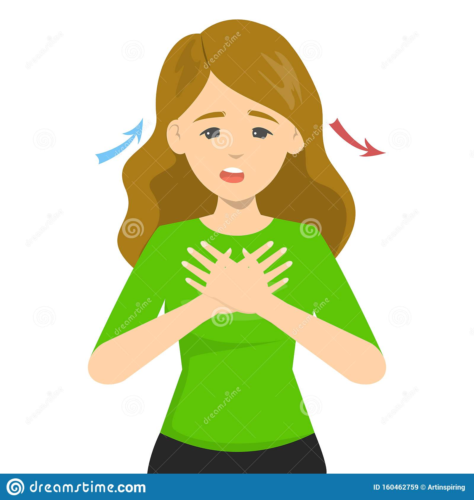

Corona Virus (COVID-19)
Coronavirus disease (COVID-19) is an infectious disease caused by a newly discovered coronavirus.
Most people infected with the COVID-19 virus will experience mild to moderate respiratory illness and recover without requiring special treatment. Older people, and those with underlying medical problems like cardiovascular disease, diabetes, chronic respiratory disease, and cancer are more likely to develop serious illness.
The best way to prevent and slow down transmission is to be well informed about the COVID-19 virus, the disease it causes and how it spreads. Protect yourself and others from infection by washing your hands or using an alcohol based rub frequently and not touching your face.
The COVID-19 virus spreads primarily through droplets of saliva or discharge from the nose when an
infected person coughs or sneezes, so it’s important that you also practice respiratory etiquette (for example,
by coughing into a flexed elbow).
Causes of New Coronavirus
Researchers aren’t sure what caused it. There’s more than one type of coronavirus. They’re common in people and in animals including bats, camels, cats, and cattle. SARS-CoV-2, the virus that causes COVID-19, is similar to MERS and SARS. They all came from bats.
How contagious is the coronavirus?
The transmission rate is relatively high. Early research has estimated that one person who has it can spread it to between 2 and 2.5 others. One study found that the rate was higher, with one case spreading to between 4.7 and 6.6 other people. By comparison, one person who has the seasonal flu will pass it to between 1.1 and 2.3 others.
The CDC reports there is evidence it can be transmitted if you get within 6 feet of someone who is infectious for a total of 15 minutes throughout a day. It had previously been believed the exposure had to be 15 minutes at a time.
We can work to lower the transmission rate by washing hands often, keeping common surfaces clean,
limiting contact with other people, and wearing cloth face masks when we can’t stay 6 feet away from
others.
What to do if you think you have it
If you live in or have traveled to an area where COVID-19 is spreading:
1. If you don’t feel well, stay home.
Even if you have mild symptoms like a headache and runny nose, stay in until you’re better.
This lets doctors focus on people who are more seriously ill and protects health care workers and
people you might meet along the way. You might hear this called self-quarantine. Try to stay in a separate room
away from other people in your home. Use a separate bathroom if you can.
2. Call the doctor if you have trouble breathing.
You need to get medical help as soon as possible. Calling ahead (rather than showing up)
will let the doctor direct you to the proper place, which may not be your doctor’s office.
If you don’t have a regular doctor, call your local board of health. They can tell you where to go for
testing and treatment.

3. Follow your doctor’s advice and keep up with the news on COVID-19.
Between your doctor and health care authorities, you’ll get the care you need and information on how to
prevent the virus from spreading.